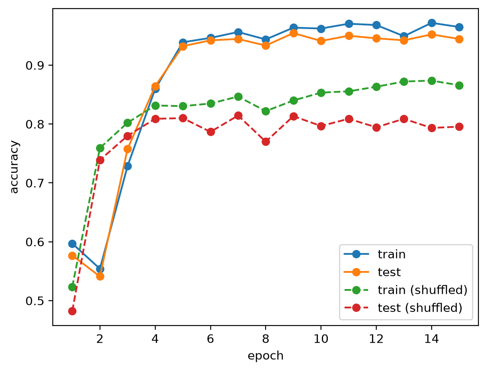

Without order the GRU falls to the level of the 50-residue composition baseline (0.802), and the gap between training and test widens: it can only memorise. The extra ≈ 0.14 comes from the order of the residues.